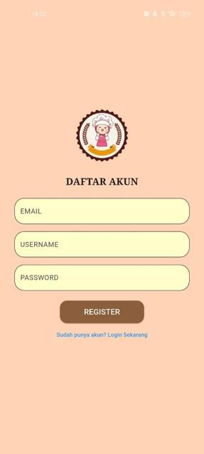
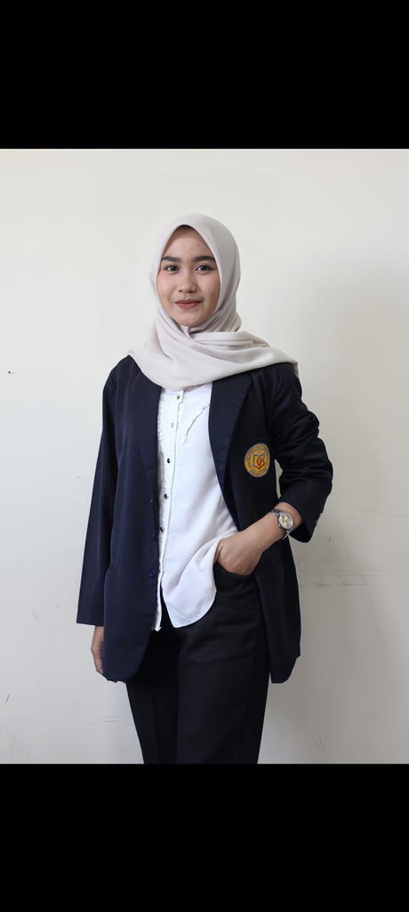
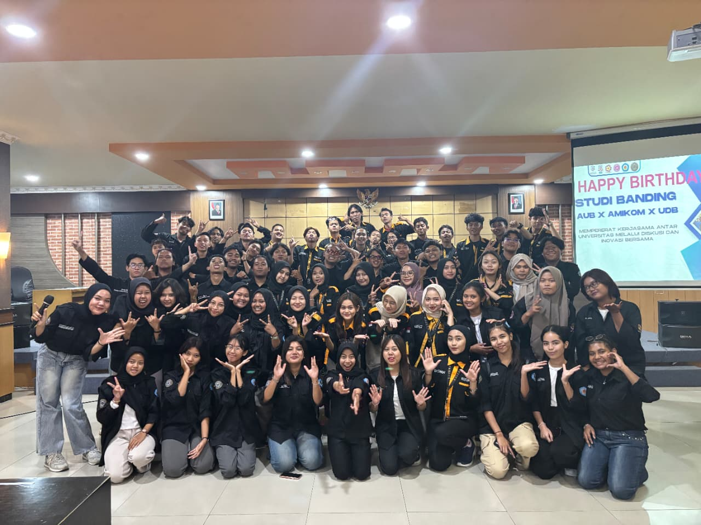
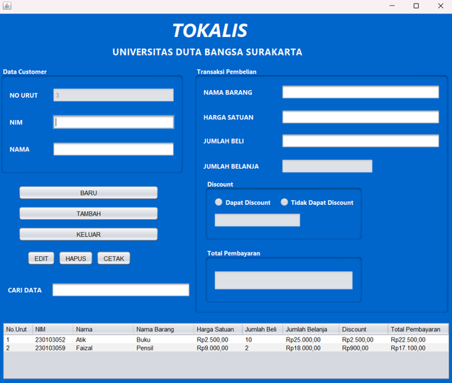
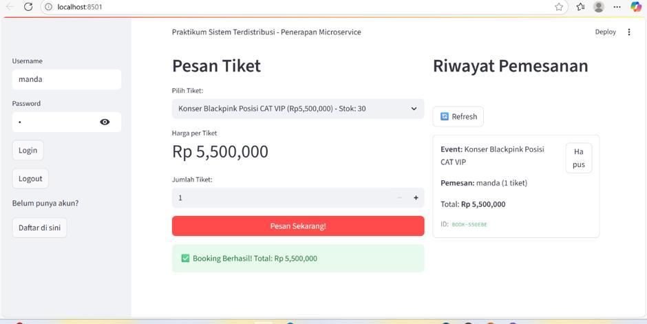
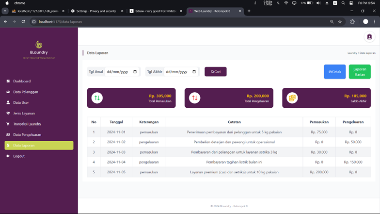
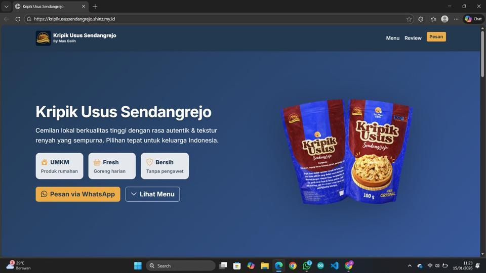
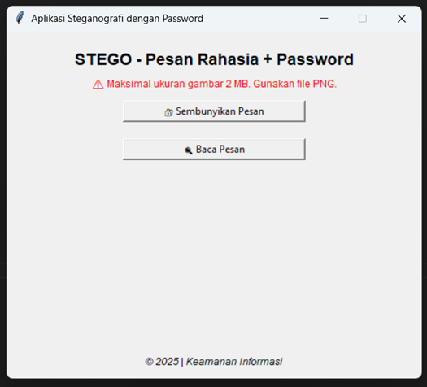
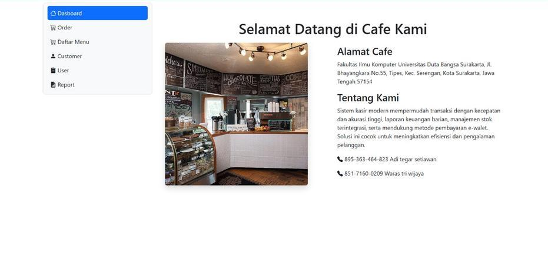
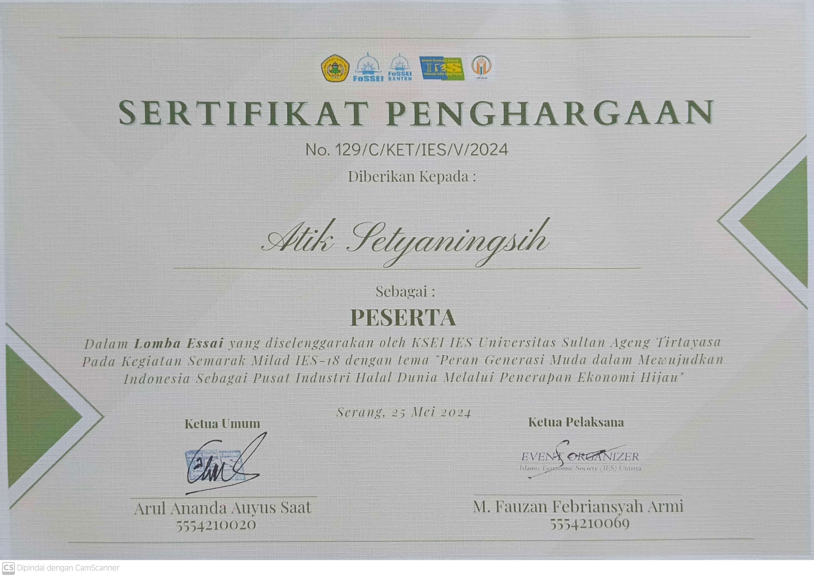

01 / MOBILE APP
Makan Apa?
Aplikasi mobile berbasis Flutter untuk membantu pengguna mengatur anggaran makan harian dan menemukan rekomendasi menu sesuai budget.
FlutterDartUI/UX
PORTOFOLIO 2026
Mahasiswa Teknik Informatika yang antusias dalam merancang dan mengembangkan solusi berbasis teknologi untuk menjawab berbagai kebutuhan, dengan mengutamakan fungsionalitas, kemudahan penggunaan, dan manfaat bagi pengguna.

Tentang Saya
Saya adalah mahasiswa Teknik Informatika yang memiliki minat pada pengembangan teknologi, mulai dari website, aplikasi mobile, pengelolaan basis data, hingga desain antarmuka. Saya menikmati proses mengubah kebutuhan menjadi solusi digital yang sederhana, fungsional, dan memberikan pengalaman terbaik bagi pengguna.
Dengan semangat belajar yang tinggi, saya terus mengasah kemampuan teknis maupun soft skill melalui proyek, organisasi, dan pengalaman magang untuk menjadi seorang software developer yang profesional.
Unduh CV ↓Keahlian
Berbagai bahasa pemrograman, framework, dan tools yang saya gunakan untuk mengembangkan solusi digital.
Terus belajar, bereksperimen, dan membuat produk yang lebih baik.
Pengalaman Organisasi
Kepala Hubungan Eksternal
BEM Fakultas Ilmu Komputer
Wakil Gubernur Kemahasiswaan
BEM Fakultas Ilmu Komputer
Gubernur Kemahasiswaan
BEM Fakultas Ilmu Komputer

Proyek Saya
Setiap proyek di bawah ini merupakan bagian dari perjalanan belajar saya dalam membangun solusi digital.

Aplikasi mobile berbasis Flutter untuk membantu pengguna mengatur anggaran makan harian dan menemukan rekomendasi menu sesuai budget.

Aplikasi desktop berbasis Java untuk mengelola transaksi penjualan, data pelanggan, serta perhitungan pembayaran agar proses administrasi lebih efisien.

Platform web untuk melihat acara, memesan tiket, dan mengelola data pemesanan.

Website untuk menyederhanakan pencatatan transaksi, pelacakan status pesanan, dan proses operasional laundry.

Website profil bisnis untuk mendukung promosi produk dan meningkatkan kehadiran digital UMKM lokal.

Aplikasi Python untuk menyembunyikan dan mengambil kembali pesan rahasia di dalam gambar digital.

Website akademik untuk menyediakan informasi cafe dengan tampilan sederhana dan ramah pengguna.
Website pemesanan kendaraan yang membantu pengguna memilih mobil dan mengelola data penyewaan.
Galeri Sertifikat
Kumpulan sertifikat pelatihan, seminar, dan pengalaman belajar yang telah saya ikuti.
 Lihat sertifikat ↗
Lihat sertifikat ↗ Lihat sertifikat ↗
Lihat sertifikat ↗ Lihat sertifikat ↗
Lihat sertifikat ↗ Lihat sertifikat ↗
Lihat sertifikat ↗ Lihat sertifikat ↗
Lihat sertifikat ↗ Lihat sertifikat ↗
Lihat sertifikat ↗ Lihat sertifikat ↗
Lihat sertifikat ↗ Lihat sertifikat ↗
Lihat sertifikat ↗ Lihat sertifikat ↗Sertifikat Seminar Nasional ↗Coding Camp Golang ↗Coding Camp Front End ↗Certificate Participant VL ↗Sertifikat Atik Setyaningsih ↗Sertifikat Atik Setyaningsih ↗Sertifikat Atik Setyaningsih ↗Sertifikat 9 ↗
Lihat sertifikat ↗Sertifikat Seminar Nasional ↗Coding Camp Golang ↗Coding Camp Front End ↗Certificate Participant VL ↗Sertifikat Atik Setyaningsih ↗Sertifikat Atik Setyaningsih ↗Sertifikat Atik Setyaningsih ↗Sertifikat 9 ↗
Lihat sertifikat ↗Mari Terhubung
Isi formulir di samping untuk mengirim pesan langsung lewat WhatsApp. Kami akan merespons secepatnya.